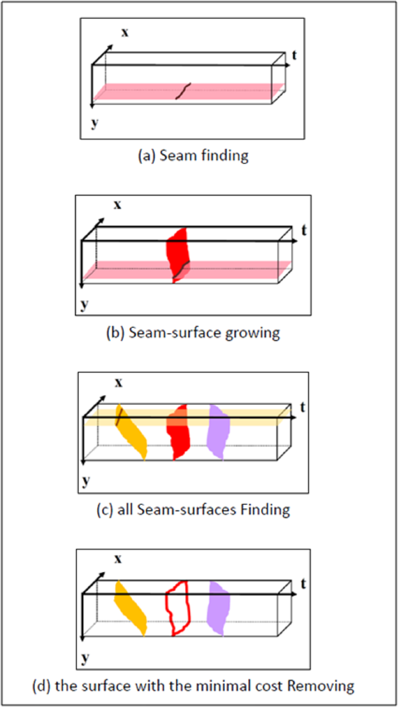

Fast content-aware video length reduction
Hsing-Ching Chang Chuan-Kai Yang
Computer Graphics & Multimedia Lab., NTUST
| Abstract |
Video length reduction has become a very important research issue in recent years. Numerous approaches have been developed, but each has its limitations, such as fragmented results, lengthy computation time, and huge memory consumption. The main contribution of this paper is to propose a new approach that addresses all three mentioned limitations in one shot. First, by modifying the dynamic programming approach originally adopted in Avidan et al.’s work, the proposed approach extracts smooth 2D sheets and thus avoids fragmentations. Second, unlike Chen et al.’s graph-cut algorithm, this approach is much simpler and could achieve similar results but with a speed that is about two orders of magnitude faster. Third, the memory consumption is also greatly reduced to be one order of magnitude smaller. Finally and most importantly, an out-of-core scheme is also proposed, which generalizes this approach to be able to cope with videos of any lengths. Results are shown and compared with existing approaches to demonstrate the effectiveness of the proposed approach. |
| Download | [PPT] |
| Figures |
|  |
{kind=link}
{kind=link}
{kind=link}